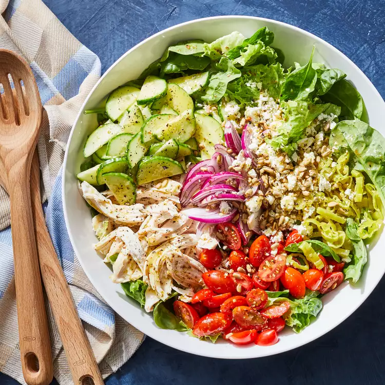

Power Salad

Description
Enjoy this filling and colorful salad for lunch or dinner. The dressing gets made in the same bowl that the salad is tossed in, so the greens absorb every bit of flavor.
Ingredients
- 1/4 cup extra-virgin olive oil
- 3 tablespoons lemon juice
- 1 clove garlic, grated
- 1/2 teaspoon dried oregano
- 1/2 teaspoon sugar
- 1/4 teaspoon salt
- 1/4 teaspoon ground pepper
- 4 cups torn green-leaf lettuce
- 4 cups baby spinach
- 2 cups shredded cooked chicken
- 1 cup halved grape tomatoes
- 1 cup halved and sliced cucumber
- 1/2 cup slivered red onion
- 1/3 cup sliced pepperoncini
- 1/3 cup crumbled feta cheese
- 2 tablespoons toasted unsalted sunflower seeds
Steps
- Whisk oil, lemon juice, garlic, oregano, sugar, salt and pepper together in a large bowl.
- Add lettuce, spinach, chicken, tomatoes, cucumber, onion and pepperoncini; toss to coat. Serve sprinkled with feta and sunflower seeds.